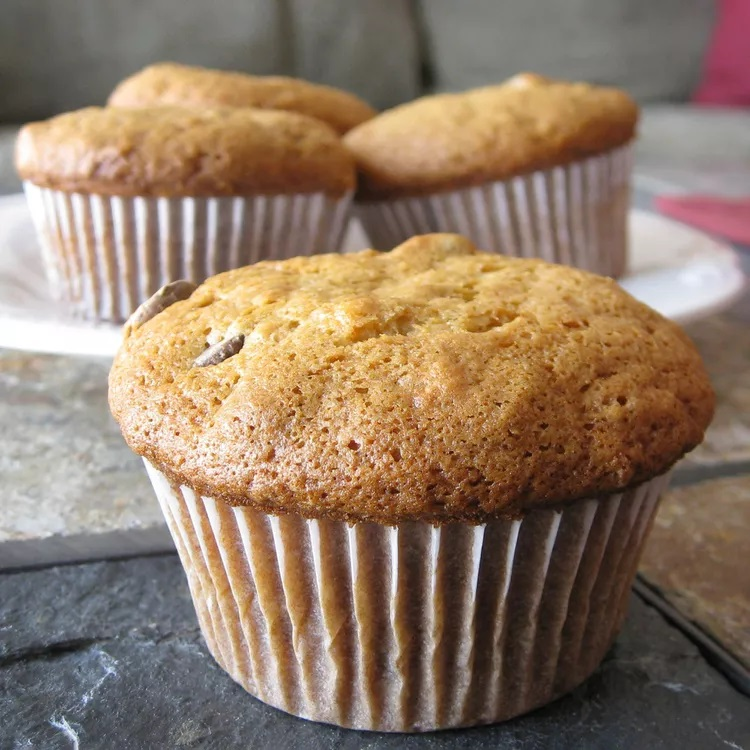
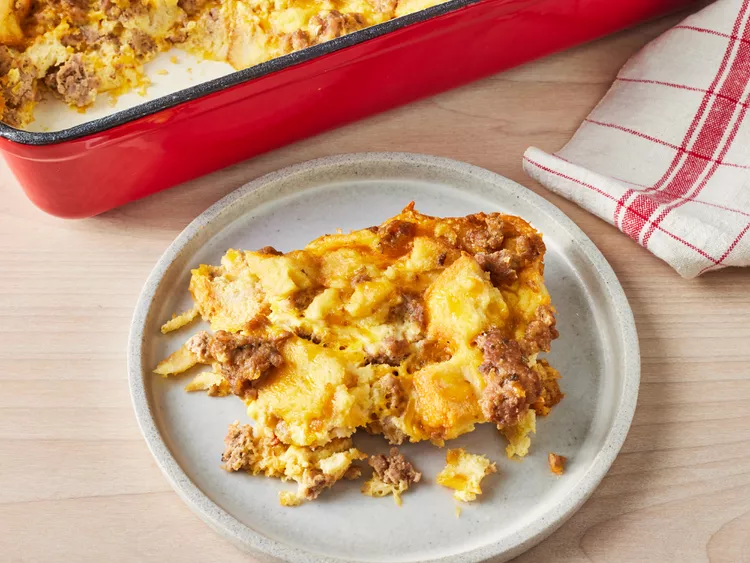
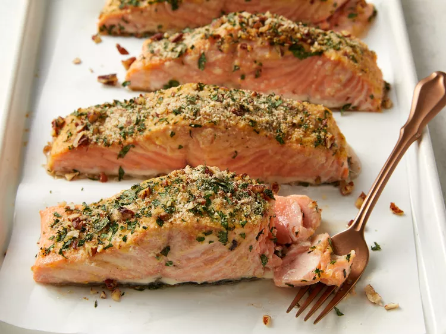

3 Five-Star Recipes We're Loving Right Now
These are the top 10 recipes that the Allrecipes community have been saving, making, and reviewing this month.
By Diana Moutsopoulos | Updated on November 14, 2023
1. Banana Muffins

2. Breakfast Sausage Casserole

3. Baked Dijon Salmon
